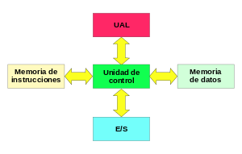
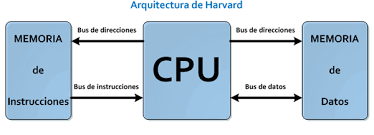
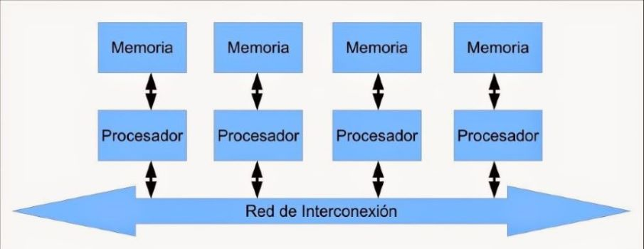
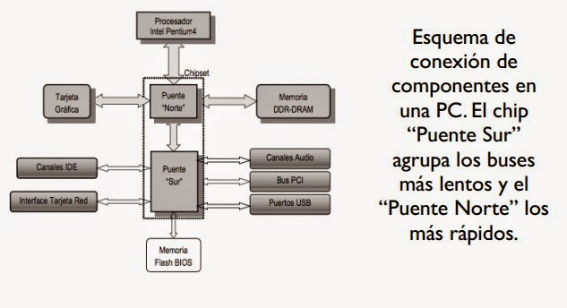

1.1 Modelos de arquitectura de cómputo
La arquitectura de computadoras es el diseño y la organización de un sistema para un equipo de cómputo. Es un modelo y descripción de cada función, así como los requerimientos y las implementaciones de diseño para varias partes del equipo de cómputo.
1.1.1 Clásicas
Estas arquitecturas se desarrollaron en las primeras computadoras electromecánicas y de tubos de vacío. Hay dos arquitecturas distintas relacionadas con el uso y distribución de la memoria: Arquitectura de John Von Neumann y Arquitectura Harvard.
Arquitectura Von Neumann
La unidad central de proceso (CPU) está conectada a una memoria principal única (casi siempre sólo RAM) donde se guardan las instrucciones del programa y los datos. A dicha memoria se accede a través de un sistema interconexión de buses único (control, direcciones y datos).
- Unidad de Memoria.
- Unidad de Entrada/Salida.
- Unidad de Control.
- Incluidos CPU.
- Unidad Aritmética Lógica.
- Incluida en CPU.
- Registros de Programas.
- Incluidos en CPU.

Modelo Harvard
Esta arquitectura utiliza los microcontroladores, tiene la unidad central de proceso (CPU) conectada a dos memorias (una con las instrucciones y otra con los datos) por medio de dos buses diferentes.
1.1.2 Segmentadas
Es una de las tecnologías utilizadas para realizar la segmentación o paralelismo. Divide el procesador en etapas, procesa una instrucción diferente en cada una y trabaja con varias a la vez.
1.1.3 De multiprocesamiento
Se denomina multiprocesador a un computador que cuenta con dos o más microprocesadores (CPUs). La arquitectura NUMA, donde cada procesador tiene acceso y control exclusivo a una parte de la memoria. La arquitectura SMP, donde todos los procesadores comparten toda la memoria.
- SISO: (Single Instruction, Single Operand) computadoras. Monoprocesador.
- SIMO: (Single Instruction, Multiple Operand) procesadores vectoriales, Extensiones MMX.
- MISO: (Multiple Instruction, Single Operand) No implementado.
- MIMO: (Multiple Instruction, Multiple Operand) sistemas SMP, Clusters, GPUs.
1.2 Análisis de los componentes
Los programas cada vez más grandes y complejos demandan mayor velocidad en el procesamiento de información, lo que implica la elección de microprocesadores más rápidos y eficientes.
1.2.1 Arquitecturas
Arquitecturas CISC: En este modelo de arquitectura, los microprocesadores tienen un conjunto de instrucciones amplio que permite operaciones complejas entre operandos.
- Reduce la dificultad de crear compiladores.
- Permite reducir el costo total del sistema.
- Mejora la compactación de código.
Arquitecturas RISC: Este tipo de microprocesador se caracteriza por instrucciones de tamaño fijo y optimizadas para segmentación y paralelismo.
1.2.1.1 Unidad Central de Procesamiento.
Se la suele llamar coloquialmente como microprocesador o simplemente procesador, y puedes considerarla como el cerebro de cualquier dispositivo.
Se encarga de procesar todas las instrucciones del dispositivo, leyendo las órdenes y requisitos del sistema operativo, así como las instrucciones de cada uno de los componentes y las aplicaciones.
CPU es la que se encarga de que todo funcione correctamente, y de interpretar todo lo que quiere hacer el sistema operativo o los componentes, estableciendo las conexiones y realizando todos los cálculos precisos para que funcione.
Cuanto más potente sea el procesador, más rápido podrá hacer las operaciones y más rápido funcionará tu dispositivo en general.
Los CPUs modernos se pueden clasificar por sus características como:
Tamaño de la Unidad Aritmética Lógica (ALU).
Bus de conexión al exterior (8, 16, 32, 64 bits).
Si su arquitectura tiene cauce (pipeline).
Si son de arquitectura CISC o RISC.
Si son Von Newmann o Harvard.
Si manejan instrucciones enteras o implementan también instrucciones de punto flotante.
No hace mucho tiempo, el procesador era algo totalmente desconocido por los usuarios de PCs.
Esto fue cambiando con el tiempo y en la actualidad cualquier persona al comprar un equipo se pregunta acerca de los atributos elementales de este dispositivo.
Es que el procesador es una parte esencial de la computadora, por eso generalmente se la conoce como su “cerebro”.